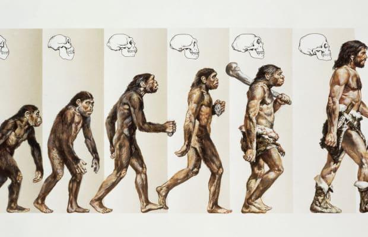
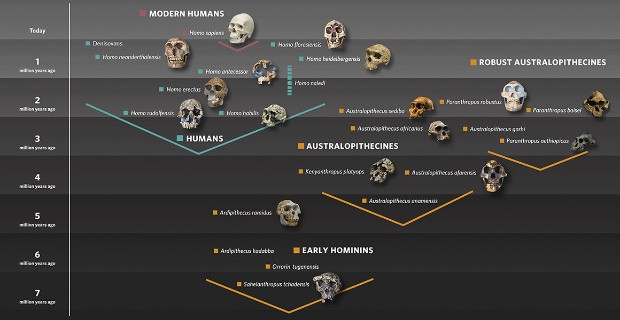
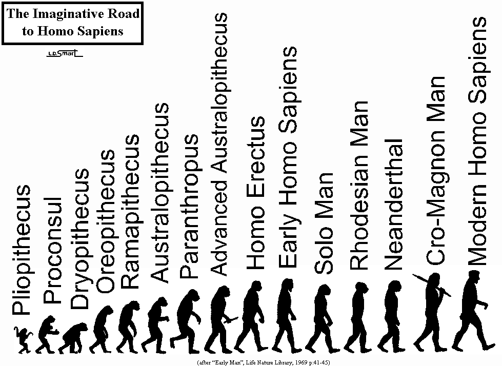

An organism reproducing mechanism that provides variable organisms.
Changes to the organism are largely random and effect future
generations. They are made without regard to consequences to the
organism. 2. A changing environment which screens organism changes. The
environment provides stress on the variable organisms that selectively
allows, through competition, certain changes to become dominant and
certain others to be eliminated, without consideration for the future of
the mechanism. ADVERTISEMENTS: That same process provides mechanism
(organism) disintegration if a strong screening environment is not
present. Evolution is a two-way process which does not always work to
the long term advantage of the organism and in fact often becomes quite
deadly to a given species and thereby eradicates it. The evolutionary
process is bidirectional in its effect. It may, depending on the
environment, either improve a given characteristic or decay it. Since
the first step in the process is largely random and most organisms are
quite complex, almost all of the variations are harmful. A
characteristic of a species advances if the environment is harsh, since
most harmful variations to that characteristic will be eliminated
through death and suffering at a rapid rate, leaving only the
inconsequential and helpful changes in the lineage.
If the environment is benign with respect to the capability of the
species then the harmful changes are not eliminated and the species will
degenerate to a point of balance with the environment. Human evolution
is the part of biological evolution concerning the emergence of Homo
sapiens as a distinct species from other hominans, great apes and
placental mammals. It is the subject of a broad scientific inquiry that
seeks to understand and describe how this change occurred. Mammals
developed from primitive mammal-like reptiles during the Triassic
Period, some 200-245 million years ago. After the terminal Cretaceous
extinction (65 million years ago) eliminated the dinosaurs, mammals as
one of the surviving groups, underwent an adaptive radiation during the
Tertiary Period. The major orders of mammals developed at this time,
including the Primates to which humans belong. Other primates include
the tarsiers, lemurs, gibbons, monkeys, and apes. Although we have
significant differences from other primates, we share an evolutionary
history that includes traits such as opposable thumbs, stereoscopic
vision, larger brains, and nails replacing claws. Primates are
relatively unspecialized mammals- they have no wings, still have all
four limbs, cannot run very fast, have generally weak teeth, and lack
armor or thick protective hides. However, the combination of primate
adaptations that include larger brains, tool use, social structure,
stereoscopic color vision, highly developed forelimbs and hands,
versatile teeth, and upright posture, place them among the most advanced
mammals.
Approximately 20 million years ago central and east Africa was densely
forested. Climatic changes resulting from plate tectonic movements and
episodes of global cooling about 15 million years ago caused a
replacement of the forest by a drier-adapted savanna mixed with open
areas of forest. During the course of hominid evolution, periodic
climate changes would trigger bursts of evolution and/or extinction.
ADVERTISEMENTS: Primates have modifications to their ulna and radius
(bones of the lower arm) allowing them to turn their hand without
turning their elbow. Many primates can also swivel or turn their arms at
the shoulder. These two adaptations offer advantages to life in the
trees. Primates have five digits on their forelimbs. They are able to
grasp objects with their forelimbs in what is known as a prehensile
movement. A second modification makes one of the digits opposable,
allowing the tips of the fingers and thumb to touch. Placement of the
eyes on the front of the head increases depth perception, an
advantageous trait in tree-dwelling primates. Changes in the location of
rods and cones in the eye adapted primates for color vision as well as
peripheral vision in dim light. Upright posture allows a primate to view
its surroundings as well as to use its hands for some other task.
Hominids, the lineage leading to humans, had changes in the shape and
size of their pelvis, femur, and knees that allowed bipedalism (walking
on two legs). The change from quadruped to biped happened in stages,
culminating in humans, who can walk or run on two legs. ADVERTISEMENTS:
Several trends of primate evolution are evident in the teeth and jaw.
First, change in the geometry of the jaw reduced the snout into a flat
face. Second, changes in tooth arrangement and numbers increased the
efficiency of those teeth for grinding food. Third, about 1.5 million
years ago our diet changed from fruits and vegetables to include meat.
Essay # 2. Origin of Apes and Hominids: The fossil record indicates
primates evolved about approximately 30 million years ago in Africa. One
branch of primates evolved into the Old and New World Monkeys, the other
into the hominoids (the line of descent common to both apes and man).
Fossil hominoids occur in Africa during the Miocene epoch of the
Tertiary period. They gave rise to an array of species in response to
major climate fluxes in their habitats. However, the nature of those
habitats leads to an obscuration of the line that leads to humans (the
hominids). ADVERTISEMENTS: Until a few years ago, the ramapiths were
thought to have given rise to the hominids. We now consider ramapiths
ancestral to the orangutang. The hominid line arose from some
as-yet-unknown ancestor. Lacking fossil evidence, biochemical and DNA
evidence suggests a split of the hominid from hominoid line about 6 to 8
million years ago. Australopithecus afarensis, the first of the
human-like hominids we know of, first appeared about 3.6-4 million years
ago. This species had a combination of human (bipedalism) and apelike
features (short legs and relatively long arms). The arm bones were
curved like chimps, but the elbows were more human-like. Scientists
speculate that A. afarensis spent some time climbing trees, as well as
on the ground. Australopithecus ramidus is an older species, about 4.4
million years, and is generally considered more anatomically primitive
than A. afarensis. The relationship between the two species remains to
be solved.